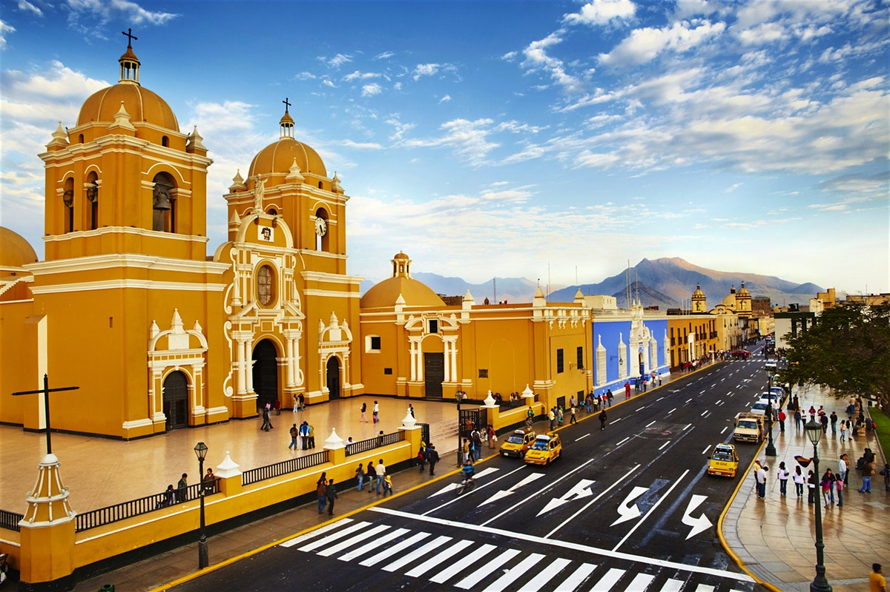

Visitar Trujillo, la capital de La Libertad, no es solo disfrutar de su agradable clima todo el año sino mucho más: es conocer uno de los núcleos urbanos más importantes de la costa norte del Perú.
El corazón es la Plaza de Armas de Trujillo, donde hay que tomarse una foto con el bello monumento a La Libertad que adorna su centro. Alrededor están la Catedral y numerosas edificaciones coloniales, con los típicos balcones y ventanas enrejadas. A pocas cuadras, nos sorprende el Museo del Juguete, junto a su famoso café bar, que pone el toque cosmopolita a la ciudad.
Cada cuadra de Trujillo es un descubrimiento, y si te animas, puedes tomar clases de marinera. Vale la pena.
Al sur de Trujillo se encuentra el Complejo Arqueológico Huacas de Moche, conformado por las Huacas del Sol y la Luna, portentosas edificaciones con un impresionante núcleo urbano en el centro, lleno de viviendas, plazas y avenidas que nos cuentan cómo eran los días de los antiguos mochicas.
En El Brujo, uno de los complejos arqueológicos más importantes y antiguos de esta zona, encontramos Huaca Prieta, Huaca Cortada y la Huaca Cao Viejo, donde se encontró la famosa momia de la Señora de Cao.
|  |